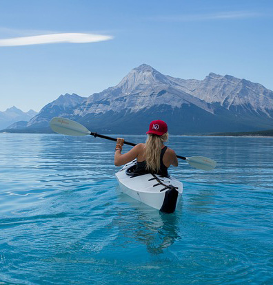

Kayaking is a great way to get out and experience nature, have some fun, and stay active. It's no wonder why kayaking is such a popular activity. Here are just a few of the reasons why kayaking is so much fun.
Kayaking is a great way to get exercise and enjoy the outdoors. It's a low-impact activity that is easy on your joints, and it's also a great way to explore your surroundings. Whether you're paddling through calm waters or navigating through rapids, kayaking is a great way to get your heart rate up and burn some calories.
There's nothing quite like paddling through serene waters in a kayak, enjoying the peacefulness of nature. And it's easier than you might think to learn how to kayak. In fact, once you've learned the basics, you can pretty much kayak anywhere there's water - from calm lakes to rushing rivers.
Kayaking is a great way to explore nature and get some exercise at the same time! So, if you’re looking for a fun outdoor activity that anyone can do, kayaking is a perfect choice. It’s easy to learn and provides a great workout, not to mention the amazing views you get to see while paddling around on the water. So what are you waiting for? Grab your kayak and hit the nearest body of water for some unforgettable fun.
Source: https://www.paddleutopia.com/why-is-kayaking-so-fun/.